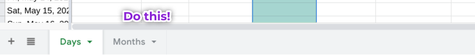

<!DOCTYPE html>
<head>
<meta charset="utf-8" />
<meta name="viewport" content="width=device-width, initial-scale=1.0" />
<title>Episode 55: The Lifelog</title>
<link rel="stylesheet" href="../../css/style.css" />
</head>
<body>
<div id="main">
<h1><a href="/">Everyday Systems</a>: <a href="../../">Podcast</a> : Episode 55</h1>
<h2>The Lifelog</h2>
<iframe class=\"yt-player\" width=\"100%\" height=\"200\" src=\"https://www.youtube-nocookie.com/embed/2QeLHhK0BU8?modestbranding=1&rel=0&playsinline=1" title="Everyday Systems Podcast Episode 55" loading="lazy" allow="accelerometer; autoplay; clipboard-write; encrypted-media; gyroscope; picture-in-picture; web-share" referrerpolicy="strict-origin-when-cross-origin" allowfullscreen></iframe>
<p style="text-align:center"><a href="http://media.libsyn.com/media/reinhard/eds-55-lifelog.mp3">Download mp3</a></p>

<br/>
<p class="c0"><span class="c2">Hi, this is Reinhard from everyday systems.</span></p><p class="c0 c1"><span class="c2"></span></p><p class="c0"><span class="c2">About 15 years ago, in 2006, I came up with this idea for minimalistic tracking of habits, called the habit traffic light. The idea was, you take a habit you are trying to build, and record somehow every day whether you succeed, fail, or are exempt because it’s an official day off (an S-day, in No-S Diet parlance: Saturday, Sunday or “special days”). So Green for success, Red for failure, Yellow for exempt -- the colors of a traffic light. You could make these marks on a physical calendar. Green smiley faces etc. in magic marker as someone posted a picture of just the other day on the facebook group. You could use different fonts or background colors in google calendar or outlook.  You could even use a simple app I created just for this purpose called the habitcal. At the time, it seemed original, but now there are dozens if not hundreds of apps that do something similar. </span></p><p class="c0 c1"><span class="c2"></span></p><p class="c0"><span class="c2">The point of all of these related tools is not data gathering per se, quantitative navel gazing, but to focus your attention on complying with the rules of a behavior or behaviors you are trying to habitualize and make it more difficult for you to kid yourself about whether you are actually following them or not. The color coding makes your success or failure jump out at you, impossible to ignore, and provides an irrational but strangely compelling chromatic incentive: you come to really want those greens and avoid those reds. Virtue may not always feel like its own reward, but green sure does. </span></p><p class="c0 c1"><span class="c2"></span></p><p class="c0"><span class="c2">Part of that chromatic incentive is a visual nudge to bounce back from failure while still recognizing it, to drown that red in a sea of green. Or see those reds becoming sparser at least. So unlike some other habit-building structures, like Jerry Seinfeld’s “don’t break the streak,” where you focus on a building as long a chain as possible, an unbroken chain of consecutive success days, on never making a mistake, a habitcal is flexible in the face of slip ups. It helps you bounce back. It gives you visual credit for “sometimes,” “usually,” and “mostly” as well as perfection.</span></p><p class="c0 c1"><span class="c2"></span></p><p class="c0"><span class="c2">Today I’m going to talk about a more sophisticated way to track habits, that builds on the habit traffic light and habitcal, but goes way beyond them. It’s much more flexible than any of the apps or mechanisms I just mentioned but retains (if you are careful, and this is key) that element of simplicity that I think is so attractive and important about the basic habit traffic light concept. </span></p><p class="c0 c1"><span class="c2"></span></p><p class="c0"><span class="c2">After all, to quote myself from the everyday systems homepage, one of the core everyday system principles is:</span></p><p class="c0 c1"><span class="c2"></span></p><p class="c0"><span class="c3 c5 c8">“No keeping track of things.</span><span class="c3 c8 c11"> The system shouldn't require you to keep track of anything beyond the day of the week, what planet you are on, etc. You have too many things to keep track of already “</span></p><p class="c0 c1"><span class="c2"></span></p><p class="c0"><span class="c2">I call this new system the Everyday Systems Life Log. And it’s not a new new app nor a high level concept, but a set of conventions for using a spreadsheet to keep track of your habits and other personal metrics. Lifelog isn’t even a new term:  But I have a specific everyday systems approach that I’m going to focus on.</span></p><p class="c0 c1"><span class="c2"></span></p><p class="c0"><span class="c2">Another way to think of lifelogging is quantitative journaling, or keeping a diary with numbers. It’s a sort of a spreadsheet diary. </span></p><p class="c0 c1"><span class="c2"></span></p><p class="c0"><span class="c2">Now you may not need this. A paper calendar and magic markers can do just fine for tracking habits. Maybe even better if you’re tracking just one. But if you’ve gotten stuck, are tracking a whole bunch of habits, or need a little something extra but you’re not sure what, a lifelog can help.</span></p><p class="c0 c1"><span class="c2"></span></p><p class="c0"><span class="c2">I use google sheets, but microsoft excel or libreoffice or numbers will work just as well. A key feature for lifelogging is something called “conditional formatting,” which any modern spreadsheet application will support. This is how you get habitcal-style chromatic incentive in a spreadsheet. And though it might sound scary if you’ve never used it, it’s actually quite simple both to understand and to implement. </span></p><p class="c0 c1"><span class="c2"></span></p><p class="c0"><span class="c3">In a nutshell, conditional formatting is a way to automatically color code the data you enter based on a simple set of rules you set, so among other things, you can get that red, yellow, green, habitcal effect. You format, i.e., color the cell, based on conditions, logic, that you set. Is the value in that cell a 1, indicating success, make it green, is it a zero, indicating failure, make it red. It can be that simple. If you are a technophobe and this sounds terrifying to you, don’t give up on it yet, take a look at the transcript of this episode. I’ve got some screenshots with arrows and other instructions and a </span><span class="c3 c6"><a class="c10" href="https://www.google.com/url?q=https://docs.google.com/spreadsheets/d/1HrUnGLlJVUDmjLu3dk5sfdbfZNdraosV7aMvHw-gHvs/edit?usp%3Dsharing&amp;sa=D&amp;source=editors&amp;ust=1619799724648000&amp;usg=AOvVaw0A2-oUfekTQjh-nIcyGgUU">sample spreadsheet you can copy as a template</a></span><span class="c2"> to get started.</span></p><p class="c0 c1"><span class="c2"></span></p><p class="c0"><span style="overflow: hidden; display: inline-block; margin: 0.00px 0.00px; border: 0.00px solid #000000; transform: rotate(0.00rad) translateZ(0px); -webkit-transform: rotate(0.00rad) translateZ(0px); width: 624.00px; height: 428.00px;"></span></p><p class="c0 c1"><span class="c2"></span></p><p class="c0"><span class="c2">The Lifelog has five basic conventions. I call them “the four one’s,” plus “conditional formatting” as the fifth convention.</span></p><p class="c0 c1"><span class="c2"></span></p><ol class="c7 lst-kix_q6b0f8ny3u7y-0 start" start="1"><li class="c0 c4 li-bullet-0"><span class="c3 c5">One spreadsheet per year</span><span class="c2">. Create a new spreadsheet for each calendar year. I call mine LL (for lifelog) and then the year. So this year “LL 2021.” Creating one spreadsheet per year is a good practice vs. creating one “forever” lifelog that spans multiple years because it gives you a chance every year to tweak and reconsider the structure of your lifelog without messing with everything you’ve ever done in the past. It also gives you an annual nudge to reflect and reconsider what you’re doing. </span></li><li class="c0 c4 li-bullet-0"><span class="c3 c5">One tab per area of focus</span><span class="c3">. Create a tab aka sheet for each category of habits or other metrics you would like to track. I like to divide mine into “body”, “soul”, and “spirits,” a riff on the platonic concept of the tripartite self, but to keep it simple, you should probably just start with a single tab that contains all of your habits. If you have just one tab and want to name it something to distinguish it from additional monthly or weekly summary tracking tabs you might add later, call it “habits” or “days.” My first lifelog, in 2016, contained just one sheet. My 2020 had 5, plus 2 summary sheets for a grand total of 7.</span><span style="overflow: hidden; display: inline-block; margin: 0.00px 0.00px; border: 0.00px solid #000000; transform: rotate(0.00rad) translateZ(0px); -webkit-transform: rotate(0.00rad) translateZ(0px); width: 624.00px; height: 73.33px;"></span><span style="overflow: hidden; display: inline-block; margin: 0.00px 0.00px; border: 0.00px solid #000000; transform: rotate(0.00rad) translateZ(0px); -webkit-transform: rotate(0.00rad) translateZ(0px); width: 624.00px; height: 100.00px;"></span></li><li class="c0 c4 li-bullet-0"><span class="c3 c5">One column per habit or metric</span><span class="c2">. In your habit tab or tabs, create a header row, containing the names of the habits you want to track, with the first column being “date.” So, for example, your header row might be “date, nos, shovelglove, glass ceiling” and maybe “weight” if that is something you’re also interested in tracking. The first cell in the date column should be the date you are starting, ideally January 1st but the first year you do this you likely won’t be able to time it like that, then drag down until an entire year’s worth of dates is created, ending December 31st. I like to freeze both the header row, with the names of the habits,  and the date column so that I can keep these visible as I scroll down or to the right, even if I’ve added a lot of habit columns or other metrics. But I do like to try to avoid or minimize horizontal scrolling, so I use short, sometimes single letter abbreviations for habits and metrics I’m tracking so I can squeeze the columns only one screen. So “w” for example for weight. This has the helpful side effect of also obfuscating what you’re doing if you’re tracking potentially private or embarrassing and someone glances over your shoulder.</span></li><li class="c0 c4 li-bullet-0"><span class="c3 c5">One row per day</span><span class="c2">. Now, every day, mark whether you have succeeded at your habit with a 1 for success, a 0 for failure, or a blank for exempt (s-days). You may have other ways of quantifying a habit, like for shovelglove instead of noting success or failure I note the rep count I do for my movements (14 being typical). You could also count minutes of shovelglove or other exercise. But if you have any doubt about what number to track, start simple with 1 for success, 0 for failure, blank for exempt. To visually distinguish exempt days from days that you just haven’t entered yet, color the background yellow or gray for exempt. Traffic light purists may prefer the yellow, aesthetes may prefer the gray.</span></li><li class="c0 c4 li-bullet-0"><span class="c3 c5"> Conditional formatting. </span><span class="c3">Add that conditional formatting I was talking about to automatically color success green and failure red or in some other way to distinguish at a glance what is good and what is bad. </span><span style="overflow: hidden; display: inline-block; margin: 0.00px 0.00px; border: 0.00px solid #000000; transform: rotate(0.00rad) translateZ(0px); -webkit-transform: rotate(0.00rad) translateZ(0px); width: 624.00px; height: 508.00px;"></span></li></ol><p class="c0 c1"><span class="c2"></span></p><p class="c0"><span class="c2">And there you have the most basic version of the lifelog: one spreadsheet, one tab, one column, one row, conditional formatting. The four ones and conditional formatting. It gives you the functionality of a dedicated habit-tracking app except you also have the power to tweak it in ways that no app will allow. It’s convenient, if you’re using a cloud version of the spreadsheet, like google sheets or microsoft office online, you can access it from your phone or any computer. And it’s free, or at least it can be -- google sheets is totally free and microsoft excel also has a free online version that is totally sufficient for this. Finally, time you spend diddling with your lifelog spreadsheet is time you spend honing a potentially job relevant skill. I’ve learned all kinds of spreadsheet tricks that I’ve gone on to use at work messing around with my lifelog.</span></p><p class="c0 c1"><span class="c2"></span></p><p class="c0"><span class="c2">This most basic version of the lifelog may be enough for you. But one of my favorite things about the lifelog, vs. some app, is how easy it is to experiment, track new things, to tweak it to summarize and view in new ways, and to fine tune your habits along with your tracking so you really hone in on a problem and block off the escape routes as old bad habits try to rout around your self-improvement efforts. </span></p><p class="c0 c1"><span class="c2"></span></p><p class="c0"><span class="c2">Here are four refinements, beyond the basics, that I’ve found helpful:</span></p><p class="c0 c1"><span class="c2"></span></p><ol class="c7 lst-kix_udpspayujkiq-0 start" start="1"><li class="c0 c4 li-bullet-0"><span class="c3 c5">Moving Averages</span><span class="c2">. If you’re tracking something like weight which jumps around all over the place, you want to focus on a larger time scale than just one day. So I added 7, 14 or 21 day moving averages for some things I track. Do this sparingly, only where it makes sense, because otherwise you’ll quickly have an overwhelming number of columns to scroll through. </span></li><li class="c0 c4 li-bullet-0"><span class="c3 c5">Monthly Summary Tab</span><span class="c3">. Create a separate tab that rolls together data from your daily tracking tab or tabs into monthly summaries. This provides a similar benefit to moving averages and lets you gather the most important habits or metrics you are tracking from several tabs into a single big picture overview. In this tab, each row represents a month instead instead of a day, and each column contains a monthly summary value. There are a number of ways you could generate each summary. I like percent green N-days each month for the No S Diet. Average weight if you’re tracking your weight. Average number of drinks per day. Maybe max number of drinks in a day, to keep a firm eye on that ceiling. Average daily minutes of meditation. Just a few examples. After each monthly row, I add a row for the yearly summary, and after that, I add previous yearly averages if I have them. Some people aren’t aware of how easy it is to grab and summarize values from other tabs in a spreadsheet. If you’re stuck, just google, or look at the sample lifelog in the transcript of this episode. You can copy the entire </span><span class="c6 c3"><a class="c10" href="https://www.google.com/url?q=https://docs.google.com/spreadsheets/d/1HrUnGLlJVUDmjLu3dk5sfdbfZNdraosV7aMvHw-gHvs/edit?usp%3Dsharing&amp;sa=D&amp;source=editors&amp;ust=1619799724651000&amp;usg=AOvVaw0Tvd4Z9qCUFOZVfrdLwxTq">sample template</a></span><span class="c2"> and modify it, or just copy and paste just the cell that contains the code you want to use.  In addition to a Monthly summary tab, I’ve also experimented with a weekly tracking tab, but that turned out to be tracking hubris and I didn’t stick with it.</span></li></ol><p class="c0"><span style="overflow: hidden; display: inline-block; margin: 0.00px 0.00px; border: 0.00px solid #000000; transform: rotate(0.00rad) translateZ(0px); -webkit-transform: rotate(0.00rad) translateZ(0px); width: 624.00px; height: 340.00px;"></span></p><ol class="c7 lst-kix_udpspayujkiq-0" start="3"><li class="c0 c4 li-bullet-0"><span class="c3 c5">Color Scale.</span><span class="c3"> Take your conditional formatting up a notch to </span><span class="c3 c5">color scale</span><span class="c3"> values that aren’t simply binary success failure. In other words, set a rule to make better things greener and worse things redder. This works great on the monthly summary tab and for moving averages, as well as for individual non-binary measures of quantity like weight or number of drinks. This is no more difficult to do than ordinary conditional formatting, in fact it’s easier because it’s just a single rule instead of multiple rules. I like to set the scale to run from shades of red (worse) to white (intermediate) to shades of green (best) for maximum clarity and visual elegance. I find that yellow as the intermediate value, which would be more true to the original traffic light point of inspiration, looks too busy and cluttered. By default, the best and worst values are based on the range of your actual data, So if your minimum recorded weight is 168 and your highest is 188, those will be the extremes of green and red, respectively. But you can manually override what the thresholds are for greenest, reddest and whitest if you prefer as I sometimes do especially when I reach cruising altitude with a habit or metric and even my worst value is pretty good.</span><span style="overflow: hidden; display: inline-block; margin: 0.00px 0.00px; border: 0.00px solid #000000; transform: rotate(0.00rad) translateZ(0px); -webkit-transform: rotate(0.00rad) translateZ(0px); width: 321.00px; height: 703.00px;"></span></li><li class="c0 c4 li-bullet-0"><span class="c3 c5">Add notes</span><span class="c2">. This is a great way to quality the quantities you are entering and add some context. It is especially interesting when you fail. How did you fail? If you had a drink over the glass ceiling limit, well, what was that drink? And what made it difficult to resist? Was it social pressure? Stress? I’ve found that generally when I fail and note circumstances like this patterns emerge. And sometimes I’m able to tweak my rules to buttress my defenses in those circumstances or avoid them entirely (I call this “strategic cowardice,” when I try to engineer my life to avoid temptations that I have a tendency to be overwhelmed by). Sometimes simply being aware of the circumstances will be enough, without any active countermeasures. And sometimes something that starts out as a note graduates to a quantitative value that you start tracking in new column. Many people find keeping a food journal helpful. You can do that here, as notes, as well, adding a column for each meal, breakfast, lunch, dinner, with additional fields between each meal for inter-meal snacking. I’ve experimented with this myself and just use the first letter of each meal to abbreviate. B is Breakfast. BL is between breakfast and lunch. L is lunch. You get the idea. I call it BLD logging. And in true No-S spirit, The headers themselves are a reminder that meals should be the focus. </span></li></ol><p class="c0 c1"><span class="c2"></span></p><p class="c0 c1"><span class="c2"></span></p><p class="c0 c1"><span class="c2"></span></p><p class="c0"><span class="c2">OK. Five basic conventions. Four refinements. That’s it, in terms of mechanics.</span></p><p class="c0 c1"><span class="c2"></span></p><p class="c0"><span class="c2">Some higher level reflections. </span></p><p class="c0 c1"><span class="c2"></span></p><p class="c0"><span class="c2">Since you can access google sheets and microsoft excel on a phone, you could update your lifelog directly as soon as you have something to add. Just like a dedicated habit-tracking app. But I prefer to mark values on the physical index cards I carry around with me (personal punch cards) and update the spreadsheet once a week all in one go. Keeps my screen time more limited and focused.</span></p><p class="c0 c1"><span class="c2"></span></p><p class="c0"><span class="c2">Google Sheets has great sharing options. So you can easily share your lifelog, with select friends or the whole world for additional accountability but I found that I quickly started tracking very personal things and didn’t want to do that. It can have that diary element to it. A quantitative diary is still a diary.</span></p><p class="c0 c1"><span class="c2"></span></p><p class="c0"><span class="c2">The Life Log does, I admit, go a little beyond what day of the week it is and what planet you’re on. But not gratuitously, I think. You get a fair amount of bang for your extra buck of tracking effort as long as you’re careful -- and this is very important --not to go overboard. </span></p><p class="c0 c1"><span class="c2"></span></p><p class="c0"><span class="c3">Because a big part of successfully practicing this system, probably </span><span class="c3 c8">the</span><span class="c3"> biggest part,  is guarding against the temptation to over-track and recognizing it and recovering from it when it eventually, inevitably happens. As I emphasize with shovelglove especially, when it comes to habits, overdoing it can be as big a danger as underdoing it, maybe more. We’re practitioners of systematic </span><span class="c3 c8">moderation</span><span class="c2">, remember. So beware tracking-hubris.</span></p><p class="c0 c1"><span class="c2"></span></p><p class="c0"><span class="c2">For many of you, this extra step of keeping a Life Log will not be necessary. But it’s something to consider if you’ve gotten stuck, if you feel like chaos is creeping in despite your strong but sporadic efforts, and you are looking for some extra motivational help. </span></p><p class="c0 c1"><span class="c2"></span></p><p class="c0"><span class="c2">I lost all my weight on no-s and shovelglove without doing anything remotely like this, before I even created the original habit traffic light or habitcal. So it certainly is not necessary. But I have found the lifelog helpful for more personally stubborn problems like glass ceiling compliance or when I’m struggling to claw myself out of a very difficult situation, some mental rut, when I feel I urgently need to change something but am maybe not sure exactly what or how. </span></p><p class="c0 c1"><span class="c2"></span></p><p class="c0"><span class="c2">Because besides helping with keeping yourself on the hook for habits you’ve committed to, the lifelog can also help you analyze and learn where exactly you’re having trouble, what days, what times, what circumstances. And then you can think of ways to tweak and pivot to better address those circumstances. It’s a way of flexibly keeping yourself on the hook, a structure for providing just enough oversight and control, preserving the impulse behind your resolutions while allowing controlled tweaking to refine them.</span></p><p class="c0 c1"><span class="c2"></span></p><p class="c0"><span class="c2">Although I’m publicly describing this system for the first time, it’s not something I’ve just started practicing. I’ve been using and refining my own lifelogs going on six years now and I think I’ve learned a lot in the process -- including (crucially!) some humility about what I can and cannot accomplish, or even sustainably track. And I hope some of what I’ve learned will be useful to you. </span></p><p class="c0 c1"><span class="c2"></span></p><p class="c0"><span class="c3">Since it’s a very visual thing, rather than attempt to talk you through all the details of conditional formatting and dealing with spreadsheet functions, as I mentioned, I’ll stick some screenshots in the transcript with arrows and notes and a link to a dummy, </span><span class="c6 c3"><a class="c10" href="https://www.google.com/url?q=https://docs.google.com/spreadsheets/d/1HrUnGLlJVUDmjLu3dk5sfdbfZNdraosV7aMvHw-gHvs/edit?usp%3Dsharing&amp;sa=D&amp;source=editors&amp;ust=1619799724654000&amp;usg=AOvVaw0liQSgb8sTdSCdxq0nJtvR">sample lifelog that you can copy and use as a template </a></span><span class="c2">to get started.</span></p><p class="c0 c1"><span class="c2"></span></p><p class="c0"><span class="c2">Thanks for listening. May the rest of your 2021 be more green than red, and may you attain some useful self-knowledge if you try this while avoiding tracking-hubris.</span></p>
<br/>
<p>By <a href="mailto:reinhard.engels@gmail.com">Reinhard Engels</a></p>
<br/>
<p>© 2002-2025  <a href="http://everydaysystems.com">Everyday Systems LLC</a>, All Rights Reserved.<p style=\"text-align:center\"><a href=\"https://everydaysystems.com/bb/viewtopic.php?t=12574">Discuss</a></p>
 src="/assets/js/year.js?v=2" defer></script>
</body>
